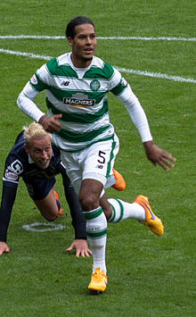
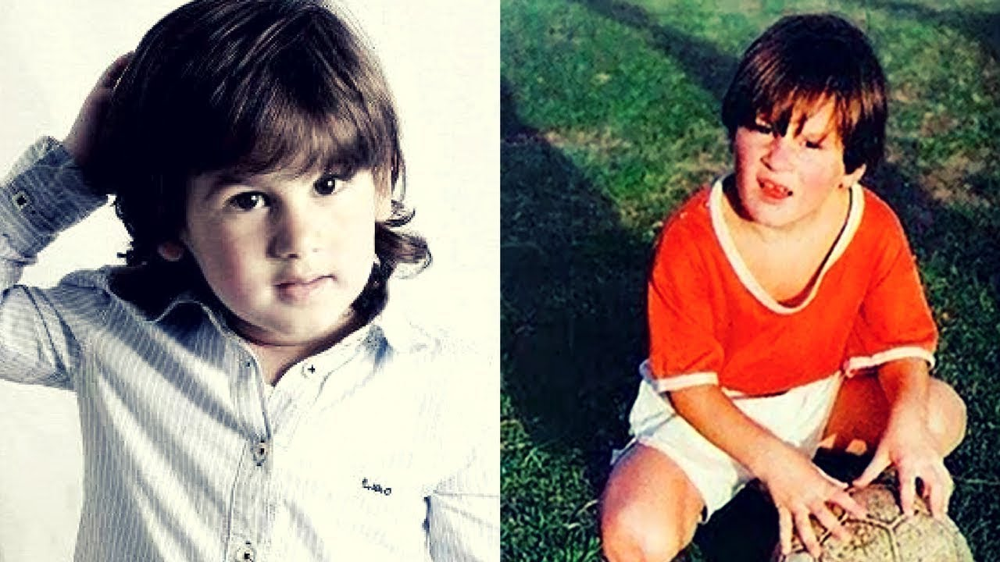
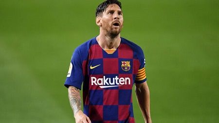

Urodził się w Bredzie. Karierę zaczynał w Willem II, zanim przeszedł do FC Groningen w 2010 roku na zasadzie wolnego transferu. 1 kwietnia 2011 roku zadebiutował w barwach Groningen w meczu z ADO Den Haag. W sezonie 2011/12 zagrał 23 spotkania w lidze. Pierwszego gola w klubie trafił przeciwko Feyenoordowi 30 października 2011 roku. W ciągu dwóch lat zdobył w sumie siedem goli.
21 czerwca 2013 roku podpisał czteroletni kontrakt ze szkockim Celtikiem. Zadebiutował w dniu 17 sierpnia z ligowym meczu z Aberdeen, wchodząc z ławki rezerwowych. Tydzień później zagrał w podstawowym składzie w meczu z Inverness. 9 listopada zdobył pierwszą bramkę w szkockiej lidze i przyczynił się do zwycięstwa swojej drużyny. W dniu 26 stycznia 2015 r. ponownie trafił do bramki rywali, przyczyniając się do 11 ligowego zwycięstwa Celticu z rzędu. 25 lutego otrzymał czerwoną kartkę w starciu z Peterem Pawlettem. Tym samym jego drużyna poniosła pierwszą porażkę w sezonie. 7 maja wraz z Celtickiem zdobył mistrzostwo Szkocji. Był jednym z trzech graczy The Bhoys, którzy znaleźli się w drużynie roku Scottish Premiership. 22 lipca 2015 r. zdobył dwa gole podczas meczu z Reykjavíkur w ramach eliminacji do Ligi Mistrzów. 21 stycznia 2015 r. został wyrzucony z boiska w 36 minucie meczu z Interem Mediolan. 15 marca zagrał w finale Pucharu Ligi Szkockiej na Hampden Park, gdzie Celtic pokonał Dundee United 2:0. 19 kwietnia zdobył bramkę z rzutu wolnego, jednak nie pomogła ona w awansie do finału Pucharu Szkocji. Celtic ponownie triumfował w lidze, a Van Dijk drugi rok z rzędu znalazł się w najlepszej drużynie roku szkockiej Premiership.
W sezonie 2015/16 podpisał kontrakt z Southampton F.C. po tym, jak Celtic nie awansował do rozgrywek Ligi Mistrzów. Zadebiutował 12 września w meczu Premier League z drużyną West Bromwich Albion. Dwa tygodnie później zdobył swoją pierwszą bramkę dla Świętych w domowym meczu ze Swansea City.7 maja 2016 roku podpisał nową 6-letnią umowę.
Lionel Messi urodził się 24 czerwca 1987 w Rosario w prowincji Santa Fe jako dziecko Jorge Horácio Messiego, pracownika huty oraz Celii Maríi (z domu Cuccitini), pracującej na pół etatu sprzątaczki. Rodzina piłkarza ze strony ojca pochodzi z włoskiego miasta Ankona, skąd jeden z przodków, Angelo Messi, wyemigrował w 1883 do Argentyny[9]. Piłkarz ma starsze rodzeństwo: braci Rodrigo i Matíasa oraz siostrę Marię Sol. Mając pięć lat, Messi zaczął grać w piłkę w lokalnym zespole Grandoli, który to prowadził jego ojciec Jorge. W 1995 roku trafił do Newell’s Old Boys, klubu mającego siedzibę w Rosario, rodzinnym mieście piłkarza.
W wieku 11 lat zdiagnozowano u niego karłowatość przysadkową . Występujące w argentyńskiej Primera División River Plate zainteresowało się jego pozyskaniem, jednak klubu nie było stać na leczenie, którego miesięczne koszty wynosiły 900 dolarów. Ojciec piłkarza skontaktował się ze skautami hiszpańskiej Barcelony, którzy po obserwacji gry Messiego zgodzili się opłacać koszty kuracji. Dyrektor sportowy klubu Carles Rexach zaproponował Messiemu kontrakt na serwetce, ponieważ nie miał przy sobie innego papieru. Piłkarz wraz z ojcem przeprowadził się do Hiszpanii i zaczął występować w młodzieżowych drużynach klubu.
W latach 2000–2003 Messi występował w zespołach Infantil B oraz Cadete B i A (w tym ostatnim zdobył 37 bramek w 30 meczach). W sezonie 2003/2004 pobił rekord występując w aż pięciu drużynach[16]. Rozegrał jedno spotkanie w Juvenil B. Zdobył w nim bramkę i otrzymał szansę gry w Juvenil A. Strzelił tam 21 goli w 14 meczach i 29 listopada 2003 roku zadebiutował w meczu Tercera División w Barcelonie C. 6 marca 2004 roku rozegrał pierwsze spotkanie w Segunda División B w barwach zespołu B. Przez cały sezon grał w obydwu tych drużynach (kolejno osiem meczów, pięć goli i pięć spotkań bez żadnej bramki)[17]. Jeszcze wcześniej, bo 16 listopada 2003 roku, w wieku 16 lat i 145 dni, Messi zadebiutował w pierwszej drużynie Barcelony w towarzyskim meczu z FC Porto.
16 października 2004 roku Messi wystąpił po raz pierwszy w Primera División, w wygranym 1:0 derbowym spotkaniu z Espanyolem[20]. W czasie występu miał 17 lat i 114 dni, stając się trzecim najmłodszym piłkarzem w historii klubu oraz najmłodszym, który zadebiutował w Primera División (we wrześniu 2007 roku rekord został pobity przez Bojana Krkicia)[18]. 1 maja 2005 w meczu z Albacete Balompié Messi zdobył swojego pierwszego gola w lidze, co uczyniło go najmłodszym strzelcem ligowej bramki dla klubu (17 lat i 311 dni). W 2007 roku osiągnięcie to ponownie poprawił Bojan Krkić[21][22]. W tamtym sezonie Messi grał także w zespole B, dla którego zdobył 6 bramek w 17 ligowych spotkaniach.
Od 2009 związany jest z Antonellą Roccuzzo, która, podobnie jak piłkarz, pochodzi z Rosario, a oboje znają się od dzieciństwa. Para pobrała się 30 czerwca 2017 roku w ich rodzinnym mieście. 2 listopada 2012 w barcelońskim szpitalu USP Dexeus, który mieści się niedaleko stadionu Camp Nou urodził się ich syn Thiago. 11 września 2015 roku urodził się ich drugi syn, Mateo. Natomiast 10 marca 2018 roku urodził się im 3 syn, Ciro.
Messi ma dwóch kuzynów, którzy zawodowo grają w piłkę nożną – Maxiego Biancucchi (obecnie występuje w paragwajskiej Olimpii Asunción) oraz Emanuela Biancucchi (obecnie występuje w paragwajskim Independiente Asunción).
Mohamed Salah Hamed Mahrous Ghaly (arab. محمد صلاح غالي, ur. 15 czerwca 1992 w Basjun) − egipski piłkarz występujący na pozycji pomocnika lub napastnika w angielskim klubie Liverpool FC oraz w reprezentacji Egiptu. Wychowanek El Mokawloon SC. W swojej karierze grał także w takich zespołach, jak FC Basel, Chelsea FC, ACF Fiorentina czy AS Roma.
Salah poślubił Magi w 2013 roku[4]. Razem mają córkę o imieniu Makka, która urodziła się w 2014 roku. Jego córka otrzymała imię od pierwszego objawienia w Koranie i urodziła się w szpitalu Westminster w południowo-zachodnim Londynie[5]. Salah jest muzułmaninem i często celebruje gole, wykonując tzw. sujood[6]. W 2018 otrzymał honorowe obywatelstwo Czeczenii[7].
Salah swoją karierę rozpoczął w klubie El Mokawloon SC. Zadebiutował w drużynie seniorów w egipskiej Premier League, w meczu wyjazdowym z El Mansourą. W sezonie 2010-11 Salah awansował do pierwszej drużyny i stał się regularnym członkiem zespołu. Strzelił pierwszego gola 25 grudnia 2010 roku podczas zremisowanego 1:1 starcia z Al-Ahly Kair. Zagrał w każdym spotkaniu podczas kolejnego sezonu. Jednak po katastrofie Port Said Stadium, na początku lutego 2012 roku, Egipska Premier League wstrzymała rozgrywki, a wszystkie mecze zostały przełożone. 10 marca 2012 roku Egipskie Stowarzyszenie Piłki Nożnej ogłosiło decyzję o anulowaniu reszty sezonu[8].